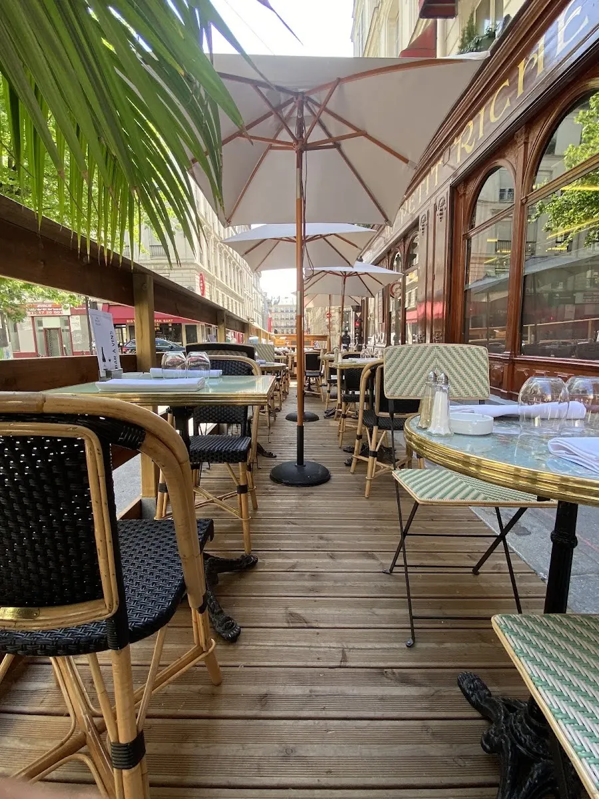

식당·카페 P0
Une table pour deux, s'il vous plaît.
두 명 자리 부탁합니다.
윈 타블 푸르 되 실 부 플레

파리 9구 르 펠르티에 거리의 오 프티 리슈(Au Petit Riche)는 1854년에 문을 연 뒤 170년 넘게 같은 자리를 지켜 온 벨에포크 살롱이다. 오페라 가르니에와 드루오 경매장 사이라는 위치 덕분에 19세기부터 언론인과 경매 관계자의 점심 식당이었고, 그 시절의 실내가 손대지 않은 채 남아 있다.
문을 열고 들어서면 칸막이로 나뉜 여러 개의 작은 살롱이 이어진다. 벽화와 금장 몰딩, 붉은 벨벳 벤치, 천장까지 닿는 대형 거울 — 파리의 '역사적 식당'이라는 말이 무엇을 뜻하는지 설명 없이 보여 주는 공간이다.
요리는 루아르와 부르고뉴를 축으로 한 정통 고전이다. 꼬치고기 크넬, 칼로 다진 소고기 타르타르, 송아지 머리고기, 마다가스카르 바닐라 크렘 브륄레 — 유행을 좇지 않는 대신 같은 요리를 오래 해 온 집의 안정감이 있다.
이 슬롯에서 유일하게 12:00에 문을 여는 집이다. 근처 후보들은 12:30 오픈이라 75분 슬롯이 실질 60분으로 줄어든다. 가장 가까운 역이 Richelieu-Drouot(8호선)이라 마레까지 환승 없이 10~12분에 닿는 것도 이 날 동선에 결정적이다.
| 운영시간 | 매일 12:00–14:00 · 19:00–22:30 |
|---|---|
| 휴무 | 연중무휴 (주 7일 영업) |
| 가격대 | 점심 메뉴 €32 · 단품 메인 €20~€27 |
| 예약 | 전화 +33 1 47 70 68 68 또는 공식 홈페이지 온라인 예약 |
| 소요시간 | 60~75분 재확인 |
| 항목 | 상세 정보 |
|---|---|
| 위치 | 25 rue Le Peletier, 75009 Paris, France |
| 운영 시간 | 매일 12:00–14:00 · 19:00–22:30 |
| 정기 휴무 | 연중무휴 (주 7일 영업) |
| 가격대 | 점심 메뉴 €32 · 단품 메인 €20~€27 — 공식 영문 메뉴 €32, 일부 매체는 점심 €29 표기 — 출발 전 재확인 |
| 예약 | 전화 +33 1 47 70 68 68 또는 공식 홈페이지 온라인 예약 |
| 접근 교통 | 메트로 8·9호선 Richelieu-Drouot역 도보 4분 (모로 미술관에서 도보 10~12분) |
| 공식 정보 | 공식 웹사이트 (verified_at: 2026-08-25) |
운영시간·요금은 2026-08-25 웹 조사 기준이다. 프랑스 식당은 연차 휴무와 단축 영업이 잦으니 방문 3~7일 전 전화로 재확인한다.
이 집이 특별한 이유는 요리보다 먼저 공간이다. 파리에는 '옛 식당'을 표방하는 곳이 많지만, 대개는 20세기에 다시 꾸민 것이다. 오 프티 리슈는 칸막이 살롱 구조 자체가 19세기 영업 방식의 흔적이다 — 경매 뒤 밀담을 나누던 손님들을 위해 공간을 잘게 나눠 두었다. 앙드레 말로 시대의 파리 문인들이 드나든 자리이기도 하다.
Le Pantruche (3 rue Victor Massé, 75009 · 모로 미술관 도보 7~8분 · 월–금 12:30–14:00 · 3코스 €23 · +33 1 48 78 55 60) — 프랑크 바랑제의 네오 비스트로. 미술관에서 가장 가깝고 예산 적합도가 가장 좋다. 간판은 그랑 마르니에 수플레. 다만 12:30 오픈이라 실질 식사가 60분으로 줄어드니 예약할 때 13:30에 나가야 한다고 미리 말할 것. 30석 소형이라 예약 필수.
Caillebotte (8 rue Hippolyte Lebas, 75009 · 도보 8~10분 · 월–토 12:30–14:00 · 점심 €23 · +33 1 53 20 88 70) — Le Pantruche와 같은 오너 그룹의 제철 비스트로. 미술관과 마레 사이 남동쪽에 있어 이동 방향이 역행하지 않는다. 역시 12:30 오픈.
Une table pour deux, s'il vous plaît.
두 명 자리 부탁합니다.
윈 타블 푸르 되 실 부 플레
Une carafe d'eau, s'il vous plaît.
수돗물 한 병 부탁합니다.
윈 카라프 도 실 부 플레
L'addition, s'il vous plaît.
계산서 부탁합니다.
라디시옹 실 부 플레

1868년 앙리 라브루스트가 주철 기둥과 9개 도자기 돔으로 완성한 19세기 건축의 걸작 '라브루스트 열람실'과 일반에 전면 무료 개방된 거대한 타원형 '오발 열람실(Salle Ovale)', 프랑스 국립도서관 박물관.

18세기 원형 곡물거래소를 세계적인 건축가 안도 다다오가 노출 콘크리트 원통 실린더로 리노베이션한 현대미술관. 프랑수아 피노 회장의 세계적 현대미술 컬렉션과 1889년 돔 천장 무역 파노라마 프레스코화.

렌조 피아노와 리처드 로저스가 건물 배관과 골격을 외벽으로 노출시킨 20세기 하이테크 건축의 전설이자 유럽 최대 근현대미술관. ⚠ 2025년 가을부터 2030년까지 전면 개보수 공사로 본관 폐관 중.

클로드 모네가 43년간 직접 꽃과 연못을 가꾸며 불후의 『수련』 대작을 창조해낸 살아있는 인상파 캔버스. 초록색 일본식 다리가 걸린 '물의 정원(Jardin d'eau)'과 핑크빛 모네 생가 아틀리에.

1900년 파리 만국박람회를 위해 건립된 45m 높이 아르누보 철골 유리 네이브(Nave)의 기념비적 국립 전시장. 2024 파리 올림픽을 거쳐 리노베이션 완료 후 재개관한 파리 문화 예술의 중심지.

중세 소르본 대학 교수와 학생들이 공용어로 라틴어를 쓰던 데서 유래한 800년 파리 지성의 요람이자 센 강 좌안(Rive Gauche)의 심장. 프랑스 위인들의 성소 팡테옹(Panthéon), 셰익스피어 앤 컴퍼니, 뤽상부르 공원.